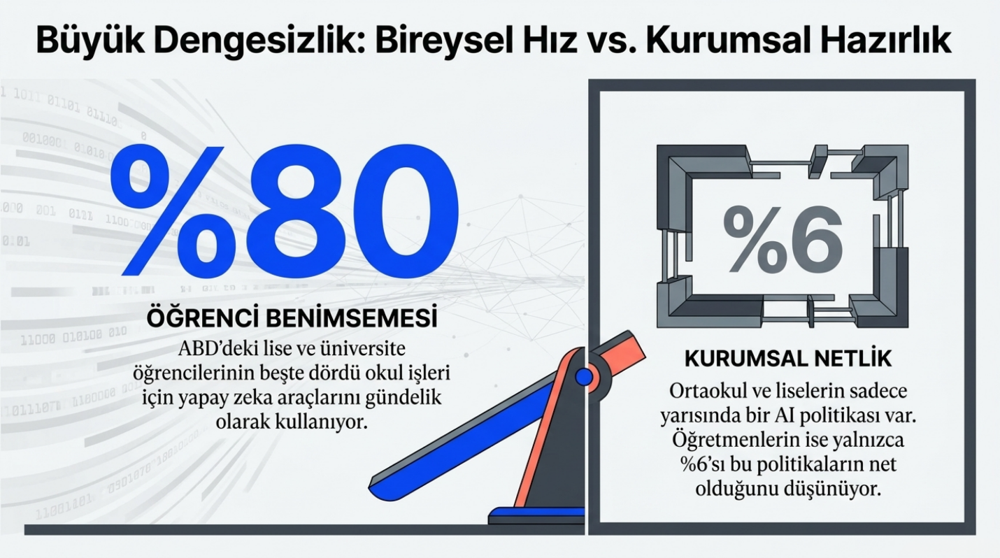
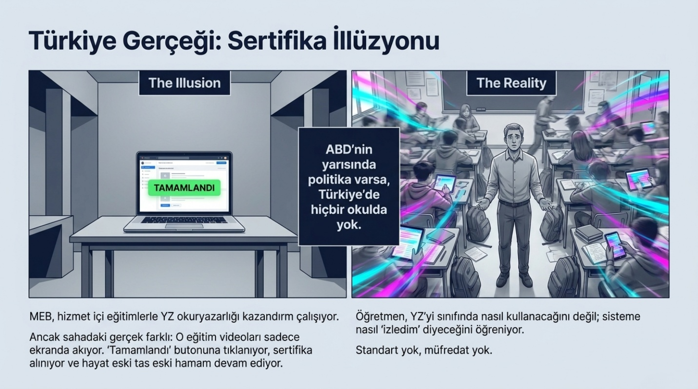
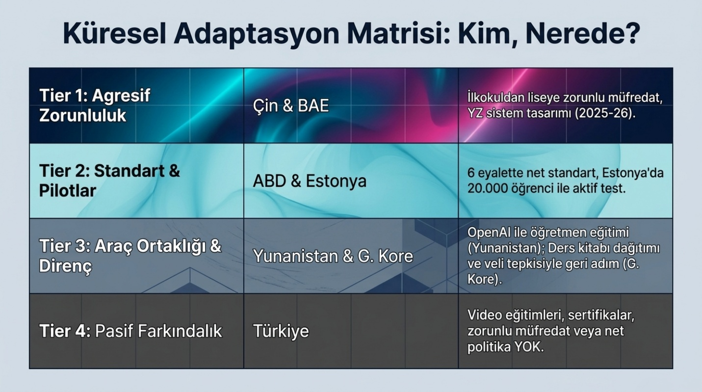
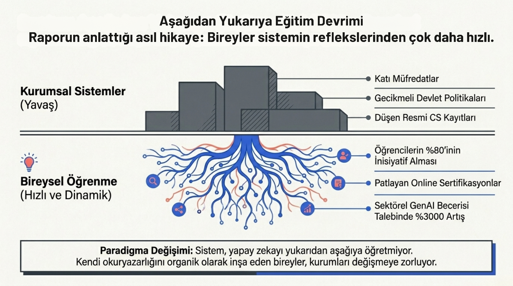

HAI 2026 AI Index Report yayınlandı. 423 sayfalık raporun eğitim bölümünde dikkat çekici veriler var ve bunların bir kısmı bizim "YZ çağına hazırlanıyoruz" söylemini ciddi şekilde sorgulatıyor.
Dünyada lise ve üniversite öğrencilerinin 5'te 4'ü okul işleri için yapay zeka kullanıyor. Üniversite öğrencilerinin %56'sı bir kavramı anlamak için YZ'ye başvuruyor. Anthropic'in kendi verisi daha da çarpıcı: öğrenciler Claude'u en çok yaratma (%39,8) ve analiz etme (%30,2) için kullanıyor. Yani üst düzey düşünme becerileri için.
Peki bu iyi mi kötü mü? Rapor cevabı havada bırakıyor ve bence doğrusu da bu. ABD'li üniversite öğrencilerinin %55'i YZ'nin eleştirel düşünme becerilerine etkisinin "karışık" olduğunu söylüyor. Öğrenci bir yandan YZ ile daha hızlı öğrendiğini düşünüyor, öte yandan o beceriyi bağımsız geliştirip geliştirmediğinden emin değil.
Bu soruyu okullar da cevaplayamıyor. ABD'de okulların sadece yarısında YZ politikası var. O politikalara sahip olanların arasında bile öğretmenlerin yalnızca %6'sı kuralların net olduğunu söylüyor. Yüzde altı. Öğrenci zaten kullanıyor, okul ne yapacağını bilmiyor, öğretmen ortada kalmış.

ABD'nin yarısında politika varsa, Türkiye'de hiçbir okulda yok. MEB bir şeyler yapıyor, yayınlıyor, hizmet içi eğitimlerle YZ okuryazarlığı farkındalığı kazandırmak istiyor. Ama sahadaki gerçek farklı: idealist birkaç öğretmen dışında o eğitim videoları sadece ekranda akıyor. Tamamlandı butonu tıklanıyor, sertifika alınıyor, hayat devam ediyor. Öğretmen YZ'yi sınıfında nasıl kullanacağını değil, sisteme nasıl "izledim" diyeceğini öğreniyor. Politika yok, standart yok, müfredat yok. Öğrenci kendi başına keşfediyor, öğretmen kendi başına bocalıyor.
Bir de madalyonun iş piyasası tarafı var. ABD'de bilgisayar bilimleri lisans kayıtları bir yılda %11 düştü. Aynı dönemde 22-25 yaş arası yazılımcıların istihdamı %20 azaldı. Öğrenciler sinyali almış görünüyor: kodlama öğrenmek tek başına yetmeyecek. Ama YZ odaklı yüksek lisans programlarına kayıtlar %17 arttı. Yani öğrenci "bilgisayar bilimleri" demiyor artık, "yapay zeka" diyor.
Ülkelere bakınca tablo daha ilginçleşiyor. Çin ve Birleşik Arap Emirlikleri 2025-26 öğretim yılından itibaren YZ eğitimini ilkokuldan liseye zorunlu kıldı. Çin'de ilkokul öğrencileri YZ okuryazarlığıyla başlıyor, lise öğrencileri YZ sistemleri tasarlıyor. ABD'de ise sadece 6 eyalette ciddi YZ içerikli standartlar var. AP Bilgisayar Bilimleri müfredatında hâlâ YZ'ye özgü içerik yok.

Güney Kore YZ ders kitaplarını ilkokullara dağıtmaya başladı, birkaç ay sonra veli ve öğretmen tepkisi yüzünden geri adım attı. Yunanistan, OpenAI ile ortaklık kurarak ortaokul öğretmenlerine ChatGPT eğitimi vermeye başladı. Estonya 20.000 öğrenci ve 3.000 öğretmenle pilot program yürütüyor.
Resmi eğitimin dışına çıkınca başka bir manzara var. LinkedIn verilerine göre insanlar YZ becerilerini kendi başlarına ediniyor. Hindistan beceri yoğunluğunda dünya lideri, ABD ikinci. BAE, Şili ve Güney Afrika'da mühendislik odaklı YZ becerileri daha hızlı büyüyor. ABD'de en hızlı büyüyen beceriler: YZ ajanları, prompt yazma, Copilot Studio.
Türkiye bu rapora birkaç yerde giriyor. OECD verilerine göre Türkiye, ön lisans düzeyinde BİT mezun sayısını %27, lisans düzeyinde %30 artırmış. Bu, ABD'den daha hızlı bir büyüme. Ama YZ eğitimine özgü bir politikadan veya zorunlu müfredattan söz edilmiyor.
Bütün bu veriler bir şeye işaret ediyor: YZ eğitimde zaten var, davet beklemeden girdi. Öğrenci kullanıyor, okul politika yazamıyor, öğretmen ne yapacağını bilmiyor, iş piyasası giriş seviyesini daraltıyor. Mesele artık "YZ'yi eğitime entegre edelim mi" değil. O gemi kalktı. Mesele, geride kalan kurumların ne kadar hızlı adapte olacağı.

Raporun eğitim dışında kalan bölümlerinden de birkaç satır bırakayım, çünkü tablo bir bütün olarak okunduğunda daha anlamlı.
Araştırma tarafında öne çıkan modellerin %91'i artık özel sektörden geliyor. Google, OpenAI, Alibaba en çok model çıkaran üç şirket. Ama şeffaflık düşüyor: parametre sayısı, eğitim verisi, eğitim süresi artık açıklanmıyor. Modeli çıkarıyorlar, nasıl yaptıklarını söylemiyorlar.
Teknik performansta en iyi modeller arasındaki fark neredeyse kapandı. ABD-Çin performans uçurumu fiilen sıfırlandı. Gemini Deep Think Uluslararası Matematik Olimpiyatı'nda altın madalya aldı ama en iyi model analog saati %50 doğrulukla okuyor. Bir yanda olimpiyat altını, öte yanda saati okuyamama. Araştırmacılar buna "yapay zekanın pürüzlü sınırı" diyor.
Ekonomide küresel YZ yatırımı 2025'te ikiye katlandı. ABD tek başına 285,9 milyar dolar yatırdı. Nvidia 4 trilyon dolarlık değerlemeyle dünyanın en değerli şirketi oldu. Ama verimlilik artışları her yerde eşit değil: müşteri desteğinde %14-15, yazılımda %26, derin muhakeme gerektiren işlerde ise düşük veya olumsuz. YZ her işi kolaylaştırmıyor; bazı işleri hızlandırıyor, bazılarında fark yaratmıyor.
Tıpta klinik not oluşturan YZ araçları yaygınlaştı, doktorlar not yazma süresini %83'e kadar azalttı. FDA 2025'te 258 YZ tıbbi cihazı onayladı. Ama ilginç olan şu: küçük, özelleşmiş modeller büyük genel modelleri yeniyor. 111 milyon parametreli bir protein modeli, milyarlarca parametreli rakiplerini geçti.

Sorumlu YZ tarafında belgeli YZ olayları 2025'te 362'ye çıktı (2024'te 233'tü). Halüsinasyon oranları modelden modele %22 ile %94 arasında değişiyor. Kuruluşların %89'u sorumlu YZ politikası oluşturmuş ama bilgi eksikliği, bütçe ve düzenleyici belirsizlik engel olmaya devam ediyor.
Politikada AB YZ Yasası'nın ilk yasakları yürürlüğe girdi, ABD deregülasyona yöneldi. Japonya, Güney Kore, İtalya ulusal YZ yasalarını çıkardı. Gelişmekte olan ülkeler ilk kez YZ stratejisi yazıyor. YZ egemenliği ulusal politikanın merkezine oturuyor.
Kamuoyunda YZ iyimserliği artıyor (%59) ama kaygı da artıyor (%52). Uzmanlar ile halk arasında uçurum var: işlere etkide uzmanların %73'ü olumlu, halkın %23'ü. ABD, YZ düzenlemesi konusunda kendi hükümetine en az güvenen ülke (%31).
423 sayfalık raporun tamamını özetlemek mümkün değil ama bir cümle yeter: YZ, etrafındaki sistemlerin adapte olabileceğinden daha hızlı ilerliyor. Eğitim, sağlık, politika, iş piyasası, hepsi yakalamaya çalışıyor. Bazıları yakın, çoğu değil.
Kaynak: Stanford HAI, "The AI Index 2026 Annual Report," Nisan 2026.
Raporun tamamına buradan ulaşabilirsiniz: aiindex.stanford.edu/report/